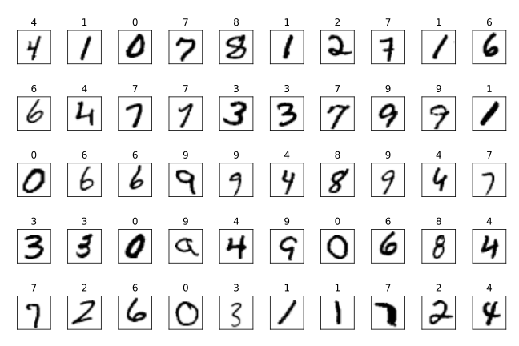
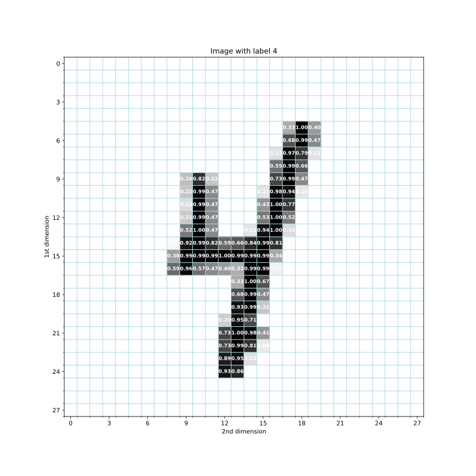

Deep Learning¶
%reset -f
%load_ext tensorboard
%matplotlib inline
import jupyter_manim
from manimlib.imports import *
import pprint as pp
import tensorflow_datasets as tfds
import tensorflow.compat.v2 as tf
import tensorflow_addons as tfa
import os, datetime, pytz
import tensorboard as tb
from matplotlib import pyplot as plt
import numpy as np
from IPython import display
import matplotlib.pyplot as plt
# produce vector inline graphics
from IPython.display import set_matplotlib_formats
set_matplotlib_formats('svg')
Introduction¶
In this notebook, we will train the following classifier using deep learning:
Handwrite a digit from 0, …, 9.
Click predict to see if the app can recognize the digit.
display.IFrame(src="https://www.cs.cityu.edu.hk/~ccha23/mnist/", width=805, height=450)
What is deep learning?
Deep learning is a technique of training a neural network with many layers of computational units called neurons. The following videos showcase some interesting applications of the technique.
display.IFrame(src="https://slides.com/ccha23/dl_intro/embed", width=805, height=450)
How to train a neural network?
We can visualize the training process in the following application, which trains a neural network that predicts the color of a given point when given its coordinate \((x_1,x_2)\).
Choose a data set from the
DATAcolumn.Click the
playbutton to start training the network.Epochis the number of times a neural network is trained iteratively using the data selected.In the
OUTPUTcolumn,points in the blue region are predicted blue, and
points in the orange region are predicted orange.
display.IFrame(src="https://www.cs.cityu.edu.hk/~ccha23/playground", width=900, height=800)
The above app is a slight modification of the open source project Tensorflow Playground with the additional features that:
You can save your configuration to the browser session by clicking the button
Save to browser session. If you reopen the browser, it will load your previously saved configuration automatically.You can reset the configuration by clicking the
resetbutton.The last button copies the permalink to your configuration to the clipboard. You can save multiple configurations and share them by keeping the permalinks.
For instance, the following uses the permalink to initialize the simplest neural network for the linearly separable data:
display.IFrame(src="https://www.cs.cityu.edu.hk/~ccha23/playground/#activation=linear&batchSize=10&dataset=gauss®Dataset=reg-plane&learningRate=0.03®ularizationRate=0&noise=0&networkShape=&seed=0.15891&showTestData=false&discretize=false&percTrainData=50&x=true&y=true&xTimesY=false&xSquared=false&ySquared=false&cosX=false&sinX=false&cosY=false&sinY=false&collectStats=false&problem=classification&initZero=false&hideText=false", width=900, height=800)
Exercise Try to tune the parameters to classify the Spiral dataset until the testing loss reaches 0.02. Include a screenshot below and give the permalink to your configuration.
YOUR ANSWER HERE
You can also fork and modify the code on GitHub to add new features, e.g., to customize the datasets and store the trained neural network. However, since the visualization is limited 2D, it is difficult to extend the app for higher-dimensional dataset with multiple class values.
Nevertheless, it is possible to train a practical neural network without any coding, by using a service called the Teachable Machine. E.g., you may follow the interactive slides below to learn to train a machine that recognizes musical notes.
(Click the play button at the bottom of the slides to start the presentation.)
%%html
<iframe src="https://www.cs.cityu.edu.hk/~ccha23/tm/slides.html" width="805" height="450" allow="microphone"></iframe>
Exercise Use Teachable Machine to train your machine. Explain what your machine does and include a link to it.
YOUR ANSWER HERE
Preliminaries¶
The neural network is trained using an iterative algorithm called the stochastic gradient descent, which requires some background on vector calculus and probability theory. The lecture series below explain the idea nicely with mathematical animations made using the python library mathematical animation engine (manim).
display.IFrame(src="https://www.youtube.com/embed/videoseries?list=PLZHQObOWTQDNU6R1_67000Dx_ZCJB-3pi", width=805, height=450)
Instead of using the mean-squared error for the loss function, we will consider the cross-entropy loss, which is more suitable for training a neural network classifier. We will have a glimpse of the information theory involved. \(\def\abs#1{\left\lvert #1 \right\rvert} \def\Set#1{\left\{ #1 \right\}} \def\mc#1{\mathcal{#1}} \def\M#1{\boldsymbol{#1}} \def\R#1{\mathsf{#1}} \def\RM#1{\boldsymbol{\mathsf{#1}}} \def\op#1{\operatorname{#1}} \def\E{\op{E}} \def\d{\mathrm{\mathstrut d}} \)
What to know about vector calculus?
To help explain the theory, we will use some notations from vector linear algebra and probability theory.
Vectors in lowercase boldface font:
Matrices in uppercase boldface font:
What to know about Probability Theory?
Random variables in sanserif font:
\[\begin{split}\underbrace{\R{y}}_{\text{random variable}}, \underbrace{\RM{x}=\begin{bmatrix}\R{x}_1 \\ \R{x}_2 \\ \vdots \end{bmatrix}}_{\text{random vector}}\end{split}\]Support sets in calligraphic font:
\(p_{\R{y}|\RM{x}}(y|\M{x})\) is the probability mass function (pmf) of \(\R{y}=y\in \mc{Y}\) conditioned on \(\RM{x}=\M{x}\in \mc{X}\), and
\(p_{\RM{x}}(\M{x})\) is the (multivariate) probability density function (pdf) of \(\RM{x}=\M{x}\in \mc{X}\).
For any function \(g\) of \((\RM{x},y)\), the expectations are:
The followings are some manims created to introduce the above notions.
%%html
<b>Notation:</b><br>
<video width="805" height="450" controls>
<source src="https://www.cs.cityu.edu.hk/~ccha23/dl/Notation.mp4" type="video/mp4">
</video>
%%html
<b>Distribution:</b><br>
<video width="805" height="450" controls>
<source src="https://www.cs.cityu.edu.hk/~ccha23/dl/Distribution.mp4" type="video/mp4">
</video>
%%html
<b>Expectation:<br>
<video width="805" height="450" controls>
<source src="https://www.cs.cityu.edu.hk/~ccha23/dl/Expectation.mp4" type="video/mp4">
</video>
You may also create your own animations with manim in the jupyter notebook using jupyter_manim and manimlib as described here.
import jupyter_manim
from manimlib.imports import *
Exercise Run the following cell and see the effect when changing
Mobjects:
TextMobject('Hello, World!')toTexMobject(r'E=mc^2')orCircle()orSquare().Animation objects:
WritetoFadeInorGrowFromCenter.
You may take a look at the documentation here and a more detailed tutorial here.
%%manim HelloWorld -l
class HelloWorld(Scene):
def construct(self):
self.play(Write(TextMobject('Hello, World!')))
Classification Problem¶
A neural network learns from many examples collected together as a dataset. For instance, the MNIST (Modified National Institute of Standards and Technology) dataset consists of labeled handwritten digits.

What is an example in a dataset?
A dataset is a sequence
of tuples/instances \((\RM{x}_i,\R{y}_i)\), each of which consists of
an input feature vector \(\RM{x}_i\) such as an image of a handwritten digit and
a label \(\R{y}_i\) such as the digit type of the handwritten digit.
What to learn from the dataset?
One of the problem in Machine Learning is classification: The goal is to train a classifier that predicts a label \(\R{y}\) for an input feature \(\RM{x}\):
A hard-decision classifier is a function \(f:\mc{X}\to \mc{Y}\) such that \(f(\RM{x})\) predicts \(\R{y}\).
A probabilistic classifier is a conditional distribution \(q_{\R{y}|\RM{x}}\) that estimates \(p_{\R{y}|\RM{x}}\).
For MNIST, the goal is to classify the digit type of a handwritten digit. When given a handwritten digit,
a hard-decision classifier returns a digit type, and
a probabilistic classifier returns a distribution of the digit types.
Why consider a probabilistic classifier?
We often train a neural network as a probabilistic classifer because:
A probabilistic classifer is more general and can give a hard decision as well
\[f(\RM{x}):=\arg\max_{y\in \mc{Y}} q_{\R{y}|\RM{x}}(y|\RM{x})\]by returning the estimated most likely digit type.
A neural network can model the distribution \(p_{\R{y}|\RM{x}}(\cdot|\RM{x})\) better than \(\R{y}\) because its output is continous.
Why can we learn from examples?
For the problem to be meaningful, \((\RM{x},\R{y})\) is assumed to be random with some unknown joint distribution \(p_{\RM{x},\R{y}}\).
If we always had \(\R{y}=y\) instead, then a perfect classifier can just return \(y\) without even looking at \(\RM{x}\).
If \(p_{\RM{x},\R{y}}\) were known instead, then \(p_{\R{y}|\RM{x}}\) would also be known and therefore needed not be estimated.
Examples are often collected randomly and independently from a population, i.e., as i.i.d. samples of \((\RM{x},\R{y})\):
If all the examples were the same instead, the examples could not show the pattern of how \(\R{y}\) depended on \(\RM{x}\).
The observed distribution of i.i.d. samples converge to the unknown distribution by the law of large number.
How to determine if a classifier is good?
Ultimately, we desire a classifier with the maximum accuracy in predicting \(\R{y}\) but doing so is computationally too difficult.
Instead, we regard a classification algorithm to be reasonably good if it can achieve the maximum possible accuracy as the number of training samples goes to \(\infty\). This is more formally stated below:
Definition A probabilistic classifier for the input feature \(\RM{x}\) and label \(\R{y}\) with unknown joint distribution is a conditional pmf
defined as a function of the i.i.d. samples
of \((\RM{x},\R{y})\) (but independent of \((\RM{x},\R{y})\)). The classifier is said to be a consistent estimate (of \(p_{\R{y}|\M{x}}\)) if
namely, \(\R{q}_{\R{y}|\RM{x}}(y|\RM{x})\) converges almost surely (a.s.) to \(p_{\R{y}|\RM{x}}\). \(\square\)
A consistent probabilistic classifier gives rise to an asymptotically optimal hard-decision classifier that achieves the maximum accuracy.
Proposition If for some \(\epsilon\geq 0\) that
the (hard-decision) classifier
achieves an accuracy
where the expectation is the maximum possible accuracy. \(\square\)
Proof: For any classifier \(f\),
where the last inequality is achievable with equality with the hard-decision classifier and \(\R{q}\) replaced by \(p\). This implies the desired accuracy lower bound for the case \(\epsilon=0\). The more general case with \(\epsilon\geq 0\) can be derived similarly. \(\blacksquare\)
How can we obtain a consistent classifier?
We train a neural network to minimize certain loss. A common loss function for classification uses the cross entropy measure in information theory.
The theoretical underpinning is the following identity that relates three information quantities:
The identity can be proved quite easily using the linearity of expectation
and a property of logarithm that
%%html
<b>Information Identity</b><br>
<video width="805" height="450" controls>
<source src="https://www.cs.cityu.edu.hk/~ccha23/dl/InformationIdentity.mp4" type="video/mp4">
</video>
Proposition With \(q_{\R{y}|\RM{x}}(y|\M{x})\) being a valid pmf of a random variable taking values from \(\mc{Y}\) conditioned on a random variable taking values from \(\mc{X}\),
and the optimal solution equals \(p_{\R{y}|\RM{x}}(y|\RM{x})\) a.s. for all \(y\in \mc{Y}\). \(\square\)
Hence, a neural network that minimizes the cross entropy equals \(p_{\R{y}|\RM{x}}(y|\RM{x})\) a.s. for all \(y\in \mc{Y}\) and any possible input image \(\RM{x}\).
Proof: It suffices to show that
with equality iff \(q_{\R{y}|\RM{x}}(y|\RM{x})=p_{\R{y}|\RM{x}}(y|\RM{x})\) a.s. This, in turn, can be proved using the log-sum inequality:
for any sequences \(\{a_i\}\), \(\{b_i\}\), and \(\{c_i\}\). \(\blacksquare\)
Data Preparation¶
Load the dataset¶
Like the iris dataset, the MNIST dataset can be obtained in many ways due to its popularity in image recognition. For instance, one may use tensorflow.keras.datasets.mnist.load_data to load the data as tuples/arrays and convert it to DataFrame. However, training a neural network often requires a lot of data and computational power. It may be inefficient or impossible to load all data into memory.
A better way is to use the package tensorflow_datasets, which lazily load the dataset and prepare the data as Tensors, which can be operated faster by GPU or TPU instead of CPU.
import tensorflow_datasets as tfds # give a shorter name tfds for convenience
import os
user_home = os.getenv("HOME") # get user home directory
data_dir = os.path.join(user_home, "data") # download folder for data
ds, ds_info = tfds.load(
'mnist',
data_dir=data_dir, # download location
as_supervised=True, # separate input features and label
with_info=True, # return information of the dataset
)
# print information related to loading the dataset
import pprint as pp
print('-' * 79)
print(f'Data downloaded to {data_dir}')
print(f'Data to be loaded in memory:')
pp.pprint(ds)
The function tfds.load download the data to data_dir and prepare it for loading using variable ds. In particular, the dataset is split into
a training set
ds["train"]anda test set
ds["test"].
tfds.load? shows more information about the function. E.g., we can control the split ratio using the argument split.
Why split the data?
The test set is used to evaluate the performance of a neural network trained using the training set (separate from the test set).
The purpose of separating the test set from the training set is to avoid overly-optimistic performance estimate. Why?
Suppose the final exam questions (test set) are the same as the previous homework questions (training set).
Students may get a high exam score simply by studying the model answers to the homework instead of understanding entire subject.
The exam score is therefore an overly-optimistic estimate of the students’ understanding of the subject.
Exercise Assign to train_size and test_size the numbers of instances in the training set and test set respectively.
Hint: Both the training and test sets are loaded as Dataset objects. Since the loading is lazy, i.e., the data is not yet in memory, we cannot count the number of instances directly. Instead, we obtain such information from ds_info.
# YOUR CODE HERE
raise NotImplementedError()
train_size, test_size
# tests
Note that the training set is often much larger than the test set especially for deep learning because
training a neural network requires many examples but
estimating its performance does not.
Show an example¶
The following retrieves an example from the training set.
for image, label in ds["train"].take(1):
print(
f'image dtype: {type(image)} shape: {image.shape} element dtype: {image.dtype}'
)
print(f'label dtype: {label.dtype}')
The for loop above takes one example from ds["train"] using the method take and print its data types.
The handwritten digit is represented by a 28x28x1
EagerTensor, which is essentially a 2D array of bytes (8-bit unsigned integersuint8).The digit type is an integer.
The following function plots the image using the imshow function from matplotlib.pyplot. We set the parameter cmap to gray_r so the color is darker if the pixel value is larger. The slice operator [:,:,0] for the image reshaped the numpy array from 3 dimensions to 2 dimensions.
def plot_mnist_image(example, ax=None, pixel_format=None):
(image, label) = example
if ax == None:
ax = plt.gca()
ax.title.set_text(label.numpy()) # show digit type as plot title
ax.imshow(image[:, :, 0], cmap="gray_r") # show image
# Major ticks
ax.set_xticks(np.arange(0, 28, 3))
ax.set_yticks(np.arange(0, 28, 3))
# Minor ticks
ax.set_xticks(np.arange(-.5, 28, 1), minor=True)
ax.set_yticks(np.arange(-.5, 28, 1), minor=True)
if pixel_format is not None:
for i in range(28):
for j in range(28):
ax.text(
j,
i,
pixel_format.format(image[i, j,
0].numpy()), # show pixel value
va='center',
ha='center',
color='white',
fontweight='bold',
fontsize='small')
ax.grid(color='lightblue', linestyle='-', linewidth=1, which='minor')
ax.set_xlabel('2nd dimension')
ax.set_ylabel('1st dimension')
ax.title.set_text('Image with label ' + ax.title.get_text())
if input('Execute? [Y/n]').lower != 'n':
plt.figure(figsize=(11, 11), dpi=80)
for example in ds["train"].take(1):
plot_mnist_image(example, pixel_format='{}')
plt.show()
Exercise Complete the following code to generate a matrix plot of the first 50 examples from the training sets.
The parameter nrows and ncols specify the number of rows and columns respectively. You code may look like
...
for ax, example in zip(axes.flat, ds["train"].____(nrows * ncols)):
plot_mnist_image(_______, ax)
ax.axes.xaxis.set_visible(False)
ax.axes.yaxis.set_visible(False)
...
and the output image should look like 
if input('Execute? [Y/n]').lower != 'n':
def plot_mnist_image_matrix(ds, nrows=5, ncols=10):
fig, axes = plt.subplots(nrows=nrows, ncols=ncols)
# YOUR CODE HERE
raise NotImplementedError()
fig.tight_layout() # adjust spacing between subplots automatically
return fig, axes
fig, axes = plot_mnist_image_matrix(ds, nrows=5)
fig.set_figwidth(9)
fig.set_figheight(6)
fig.set_dpi(80)
# plt.savefig('mnist_examples.svg')
plt.show()
Preprocess the data¶
We will use the tensorflow library to process the data and train the neural network. (Another popular library is PyTorch.)
import tensorflow.compat.v2 as tf # explicitly use tensorflow version 2
Each pixel is stored as an integer from \(\Set{0,\dots,255}\) (\(2^8\) possible values). However, for computations by the neural network, we need to convert it to a floating point number. We will also normalize each pixel value to be within the unit interval \([0,1]\):
Exercise Using the function map, normalize each element of an image to the unit interval \([0,1]\) after converting them to tf.float32 using tf.cast.
Hint: The normalization factor is NOT 256. You code may look like
...
ds_n[part] = ds[part].map(
lambda image, label: (_____(image, _____) / ___, label),
num_parallel_calls=tf.data.experimental.AUTOTUNE)
...
and the output image should look like 
def normalize_mnist(ds):
"""
Returns:
MNIST Dataset with image pixel values normalized to float32 in [0,1].
"""
ds_n = dict.fromkeys(ds.keys()) # initialize the normalized dataset
for part in ds.keys():
# normalize pixel values to [0,1]
# YOUR CODE HERE
raise NotImplementedError()
return ds_n
ds_n = normalize_mnist(ds)
pp.pprint(ds_n)
plt.figure(figsize=(11, 11), dpi=80)
for example in ds_n["train"].take(1):
plot_mnist_image(example,
pixel_format='{:.2f}') # show pixel value to 2 d.p.s
plt.savefig('mnist_example_normalized.svg')
plt.show()
# tests
To avoid overfitting, the training of a neural network uses stochastic gradient descent which
divides the training into many steps where
each step uses a randomly selected minibatch of samples
to improve the neural network bit-by-bit.
The following code specifies the batch size and enables caching and prefetching to reduce the latency in loading examples repeatedly for training and testing.
def batch_mnist(ds_n):
ds_b = dict.fromkeys(ds_n.keys()) # initialize the batched dataset
for part in ds_n.keys():
ds_b[part] = (
ds_n[part].batch(
128) # Use a minibatch of examples for each training step
.shuffle(
ds_info.splits[part].num_examples,
reshuffle_each_iteration=True) # shuffle data for each epoch
.cache() # cache current elements
.prefetch(tf.data.experimental.AUTOTUNE)
) # preload subsequent elements
return ds_b
ds_b = batch_mnist(ds_n)
pp.pprint(ds_b)
Exercise The output to the above cell should look like
{'test': <PrefetchDataset shapes: ((None, 28, 28, 1), (None,)), types: (tf.float32, tf.int64)>,
'train': <PrefetchDataset shapes: ((None, 28, 28, 1), (None,)), types: (tf.float32, tf.int64)>}
with a new first dimension of unknown size None. Why?
YOUR ANSWER HERE
Training and Testing¶
Define the neural network architecture¶
As mentioned earlier, the neural network computes an estimate \(q_{\R{y}|\RM{x}}(y|\M{x})\) of the unknown probability \(p_{\R{y}|\RM{x}}(y|\M{x})\) for any image \(\M{x}\in \mc{X}\) and label \(y\in \mc{Y}\). The computation is organized into layers of computation units called the neurons.
For \(\ell\in \{0,\dots,L\}\) and integer \(L\geq 1\), let
\(\M{a}^{(\ell)}\) be the output of the \(\ell\)-th layer of the neural network, and
\(a^{(\ell)}_i\) be the \(i\)-th element of \(\M{a}^{(\ell)}\). The element is computed from the output \(\M{a}^{(\ell-1)}\) of its previous layer except for \(\ell=0\).
The \(0\)-th layer is called the input layer while the \(L\)-th layer is called the output layer. All other layers are called the hidden layers.
A basic neural network architecture computes \(q_{\R{y}|\RM{x}}(y|\M{x})\) as
where
\(\M{W}^{(\ell)}\) is a matrix of weights;
\(\M{b}^{(\ell)}\) is a vector called bias; and
\(\sigma^{(\ell)}\) is a reveal-valued function called the activation function.
To ensure \(\M{a}^{(L)}\) is a valid probability vector, the soft-max activation function is often used for the last layer:
where \(k:=\abs{\mc{Y}}=10\) is the number of distinct class labels.
This ensures \(\M{a}^{(L)}\) (the output of soft-max) is stochastic, i.e.,
The activation functions \(\sigma^{(\ell)}\) for other layers \(1\leq \ell<L\) is often the vectorized version of
sigmoid:
rectified linear unit (ReLU):
%%html
<b>Activation function:</b><br>
<iframe width="805" height="450" src="https://www.youtube.com/embed/aircAruvnKk?start=649&end=695" frameborder="0" allow="accelerometer; autoplay; encrypted-media; gyroscope; picture-in-picture" allowfullscreen></iframe>
The following plots the ReLU activation function.
def ReLU(z):
return np.max([np.zeros(z.shape), z], axis=0)
z = np.linspace(-5, 5, 100)
plt.plot(z, ReLU(z))
plt.xlim(-5, 5)
plt.title(r'ReLU: $\max\{0,z\}$')
plt.xlabel(r'$z$')
plt.show()
Exercise Complete the vectorized function sigmoid using the vectorized exponentiation np.exp.
def sigmoid(z):
# YOUR CODE HERE
raise NotImplementedError()
plt.plot(z, ReLU(z))
plt.xlim(-5, 5)
plt.title(r'Sigmoid function: $\frac{1}{1+e^{-z}}$')
plt.xlabel(r'$z$')
plt.show()
# tests
The following uses the keras library to define the basic neural network achitecture. keras runs on top of tensorflow and offers a higher-level abstraction to simplify the construction and training of a neural network. (tflearn is another library that provides a higher-level API for tensorflow.)
def create_simple_model():
tf.keras.backend.clear_session() # clear keras cache.
# See https://github.com/keras-team/keras/issues/7294
model = tf.keras.models.Sequential([
tf.keras.layers.Flatten(input_shape=(28, 28, 1)),
tf.keras.layers.Dense(16, activation=tf.keras.activations.relu),
tf.keras.layers.Dense(16, activation=tf.keras.activations.relu),
tf.keras.layers.Dense(10, activation=tf.keras.activations.softmax)
], 'Simple_sequential')
return model
model = create_simple_model()
model.summary()
The above defines a linear stack of fully-connected layers after flattening the input. The method summary is useful for debugging in Keras.
Execise Assign to n_hidden_layers the number of hidden layers for the above simple sequential model.
Hint: The layer Flatten do not counts as a hidden layer since it simply reshape the input without using any trainable parameters. The output layer also do not count as a hidden layer since its output is the output of the neural network, not intermediate (hidden) values that require further processing by the neurons.
# YOUR CODE HERE
raise NotImplementedError()
n_hidden_layers
# tests
Train and validate¶
Recall that a neural network that minimizes the cross entropy gives \(p_{\R{y}|\RM{x}}(y|\RM{x})\) a.s. for all \(y\in \mc{Y}\) and any possible input image \(\RM{x}\):
The cross entropy cannot be computed exactly without knowing the joint distribution \(p_{\RM{x}\R{y}}\). Nevertheless, it can be estimated from a batch of i.i.d. samples \((\RM{x}_{\R{j}_i},\R{y}_{\R{j}_i})\) for \(1\leq i\leq n\):
where
is the vector of parameters of the neural network defined in (net).
A mini-batch gradient descent algorithm is often used to reduce the loss. It iteratively updates/trains the neural network parameters:
by computing the gradient \(\nabla \R{L}(\theta)\) on a randomly selected minibatch of examples and choosing an appropriate learning rate \(s\).
As explained in the lecture series on deep learning in the introduction section:
The gradient can be computed systematically using a technique called backpropagation due to the structure of the neural network in (net).
The learning rate can affect the convergence rate of the loss to a local minima:
\(\theta\) may overshoot its optimal value if \(s\) is too large, and
the convergence can be very slow if \(\theta\) is too small.
A more advanced method called Adam (Adaptive Momentum Estimation) can adaptively choose \(s\) to speed up the convergence.
%%html
<div>
<b>What is gradient descent?</b><br>
<iframe width="805" height="450" src="https://www.youtube.com/embed/IHZwWFHWa-w?start=468&end=510" frameborder="0" allow="accelerometer; autoplay; encrypted-media; gyroscope; picture-in-picture" allowfullscreen></iframe>
</div>
<div>
<b>How to choose the step size?</b><br>
<iframe width="805" height="450" src="https://www.youtube.com/embed/IHZwWFHWa-w?start=403&end=415" frameborder="0" allow="accelerometer; autoplay; encrypted-media; gyroscope; picture-in-picture" allowfullscreen></iframe>
</div>
The loss function, gradient descent algorithm, and the performance metrics can be specified using the compile method.
def compile_model(model):
model.compile(loss=tf.keras.losses.SparseCategoricalCrossentropy(),
optimizer=tf.keras.optimizers.Adam(0.001),
metrics=[tf.keras.metrics.SparseCategoricalAccuracy()])
return model
compile_model(model)
model.loss, model.optimizer
We can now train the neural network using the method fit of the compiled model:
if input('Train? [Y/n]').lower() != 'n':
model.fit(ds_b["train"])
Exercise By default, the neural network is trained for 1 epoch. What happens to the training accuracy if you rerun the above cell to train the model for another epoch?
YOUR ANSWER HERE
We can set the parameter epochs to train the neural network for multiple epochs since it is quite unlikely to train a neural network well with just one epoch. To determine whether the neural network is well-trained (when to stop training), we should also use a separate validation set to evaluate the performance of the neural network. The validation set can be specified using the parameter validation_set as follows:
if input('Train? [Y/n]').lower() != 'n':
model.fit(ds_b["train"], epochs=6, validation_data=ds_b["test"])
Exercise Is the maximum validation accuracy val_sparse_categorical_accuracy (over different epoches) an unbiased estimate of the performance of deep learning for the given dataset? If not, how to avoid the bias?
YOUR ANSWER HERE
Exercise Is it a good idea to use cross-validation to evaluate the neural network? Why or why not?
YOUR ANSWER HERE
Log the results¶
To call additional functions during training, we can add the functions to the callbacks parameter of the model fit method. For instance:
import tqdm.keras
if input('Train? [Y/n]').lower() != 'n':
model.fit(ds_b["train"],
epochs=6,
validation_data=ds_b["test"],
verbose=0,
callbacks=[tqdm.keras.TqdmCallback(verbose=2)])
The above code uses tqdm.keras.TqdmCallback() to return a callback function that displays a graphical progress bar:
Setting
verbose=0for the methodfitdisables the default text-based progress bar.Setting
verbose=2for the classTqdmCallbackshow and keep the progress bars for training each batch. Try changingverboseto other values to see different effects.
An import use of callback functions is to save the models and results during training for further analysis. We define the following function train_model for this purpose:
Take a look at the docstring to learn its basic usage, and then
learn the implementations in the source code.
import os, datetime, pytz
def train_model(model,
fit_params={},
log_root='.',
save_log_params=None,
save_model_params=None,
debug_params=None):
'''Train and test the model, and return the log directory path name.
Parameters:
----------
log_root (str): the root directory for creating log directory
fit_params (dict): dictionary of parameters to pass to model.fit.
save_log_params (dict): dictionary of parameters to pass to
tf.keras.callbacks.TensorBoard to save the results for TensorBoard.
The default value None means no logging of the results.
save_model_params (dict): dictionary of parameters to pass to
tf.keras.callbacks.ModelCheckpoint to save the model to checkpoint
files.
The default value None means no saving of the models.
debug_params (dict): dictionary of parameters to pass to
tf.debugging.experimental.enable_dump_debug_info for debugger
v2 in tensorboard.
The default value None means no logging of the debug information.
Returns:
-------
str: log directory path that points to a subfolder of log_root named
using the current time.
'''
# use a subfolder named by the current time to distinguish repeated runs
log_dir = os.path.join(
log_root,
datetime.datetime.now(
tz=pytz.timezone('Asia/Hong_Kong')).strftime("%Y%m%d-%H%M%S"))
callbacks = fit_params.pop('callbacks', []).copy()
if save_log_params is not None:
# add callback to save the training log for further analysis by tensorboard
callbacks.append(
tf.keras.callbacks.TensorBoard(log_dir,
**save_log_params))
if save_model_params is not None:
# save the model as checkpoint files after each training epoch
callbacks.append(
tf.keras.callbacks.ModelCheckpoint(os.path.join(log_dir, '{epoch}.ckpt'),
**save_model_params))
if debug_params is not None:
# save information for debugger v2 in tensorboard
tf.debugging.experimental.enable_dump_debug_info(
log_dir, **debug_params)
# training + testing (validation)
model.fit(ds_b['train'],
validation_data=ds_b['test'],
callbacks=callbacks,
**fit_params)
return log_dir
For example:
fit_params = {'epochs': 6, 'callbacks': [tqdm.keras.TqdmCallback()], 'verbose': 0}
log_root = 'private/demo/'
save_log_params = {'update_freq': 100, 'histogram_freq': 1}
save_model_params = {'save_weights_only': True, 'verbose': 1}
debug_params = {'tensor_debug_mode': "FULL_HEALTH", 'circular_buffer_size': -1}
if input('Train? [Y/n]').lower() != 'n':
model = compile_model(create_simple_model())
log_dir = train_model(model,
fit_params = fit_params,
log_root=log_root,
save_log_params=save_log_params,
save_model_params=save_model_params,
debug_params=debug_params)
By providing the save_model_params to the callback tf.keras.callbacks.ModelCheckpoint, the model is saved at the end of each epoch to log_dir.
!ls {log_dir}
Saving the model is useful because it often takes a long time to train a neural network. To reload the model from the latest checkpoint and continue to train it:
if input('Continue to train? [Y/n]').lower() != 'n':
# load the weights of the previously trained model
restored_model = compile_model(create_simple_model())
restored_model.load_weights(tf.train.latest_checkpoint(log_dir))
# continue to train
train_model(restored_model,
log_root=log_root,
save_log_params=save_log_params)
By providing tf.keras.callbacks.TensorBoard as a callback function to the fit method earlier, the training logs can be analyzed using TensorBoard.
if input('Execute? [Y/n]').lower() != 'n':
%load_ext tensorboard
%tensorboard --logdir {log_dir}
The SCALARS tab shows the curves of training and validation losses/accuracies after different batches/epoches. The curves often have jitters as the gradient descent is stochastic (random). To see the typical performance, a smoothing factor \(\theta\in [0,1]\) can be applied on the left panel. The smoothed curve \(\bar{l}(t)\) of the original curve \(l(t)\) is defined as
which is called the moving average. Try changing the smoothing factor on the left panel to see the effect.
Exercise If the smoothing factor \(\theta\) is too large, would it cause bias when using empirical loss or performance to estimate the actual loss or performance? If so, is estimate overly optimistic or pessimistic?
YOUR ANSWER HERE
We can also visualize the input images in TensorBoard:
Run the following cell to write the images to the log directory.
Click the
refreshbutton on the top of the previous TensorBoard panel.Click the
IMAGEtab to show the images.
if input('Execute? [Y/n]').lower() != 'n':
file_writer = tf.summary.create_file_writer(log_dir)
with file_writer.as_default():
# Don't forget to reshape.
images = np.reshape([image for (image, label) in ds["train"].take(25)],
(-1, 28, 28, 1))
tf.summary.image("25 training data examples",
images,
max_outputs=25,
step=0)
In addition to presenting the results, TensorBoard is useful for debugging deep learning. In particular, learn
to check the model graph under the
GRAPHStab,to debug using the
DEBUGGER v2tab, and
TensorBoard can also show simultaneously the logs of different runs stored in different subfolders of the log directory:
if input('Execute? [Y/n]').lower() != 'n':
%load_ext tensorboard
%tensorboard --logdir {log_root}
You can select different runs on the left panel to compare their performance.
Note that loading the log to TensorBoard may consume a lot of memory. You can list the TensorBoard notebook instances and kill those you do not need anymore by running !kill {pid}.
import tensorboard as tb
tb.notebook.list() # list all the running TensorBoard notebooks.
pids_to_kill = [] # modify the list of pid to kill
for pid in pids_to_kill:
!kill {pid}
Exercise Train the following network with dropout. Try to tune the network for the best accuracy. Use log_root='logs/dropout/' to so your log will also be submitted along with your notebook. Put your training code inside the body of the conditional if input... for autograding to work.
def create_dropout_model():
model = tf.keras.models.Sequential([
tf.keras.layers.Flatten(input_shape=(28, 28, 1)),
tf.keras.layers.Dense(128, activation=tf.keras.activations.relu),
tf.keras.layers.Dropout(0.2), # dropout
tf.keras.layers.Dense(10, activation=tf.keras.activations.softmax)
], name="Dropout")
return model
model = compile_model(create_dropout_model())
print(model.summary())
log_root = 'logs/dropout/'
if input('Train? [Y/n]').lower() != 'n':
# YOUR CODE HERE
raise NotImplementedError()
Exercise Explore the convolutional neural network (CNN). Try to tune the network for the best accuracy.
def create_cnn_model():
model = tf.keras.models.Sequential([
tf.keras.layers.Conv2D(32,
3,
activation='relu',
input_shape=(28, 28, 1)),
tf.keras.layers.MaxPooling2D(),
tf.keras.layers.Flatten(),
tf.keras.layers.Dense(64, activation='relu'),
tf.keras.layers.Dense(10, activation='softmax')
], name="CNN")
return model
model = compile_model(create_cnn_model())
print(model.summary())
log_root = 'logs/cnn/'
if input('Train? [Y/n]').lower() != 'n':
# YOUR CODE HERE
raise NotImplementedError()
Exercise Launch TensorBoard to show the best performances of each of the two neural network architectures. Note that to clean up the log of the inferior results, you may need to kill the TensorBoard instance. It is easier to use the vscode interface or the terminal in the lab interface to remove folders.
if input('Execute? [Y/n]').lower() != 'n':
# YOUR CODE HERE
raise NotImplementedError()
Deployment¶
Once you are satisfied with the result, you can deploy the model as a web application.
model.save('model.h5')
Convert the model to files in mnist/model that can be loaded by tensorflow.js on the page mnist/index.html.
!tensorflowjs_converter --input_format keras 'model.h5' 'mnist/model'
To download the mnist folder, we first compress it as follows:
!zip -r mnist.zip mnist/* index.html
Finally, you can download the zip file here and host the web application on a static web server.